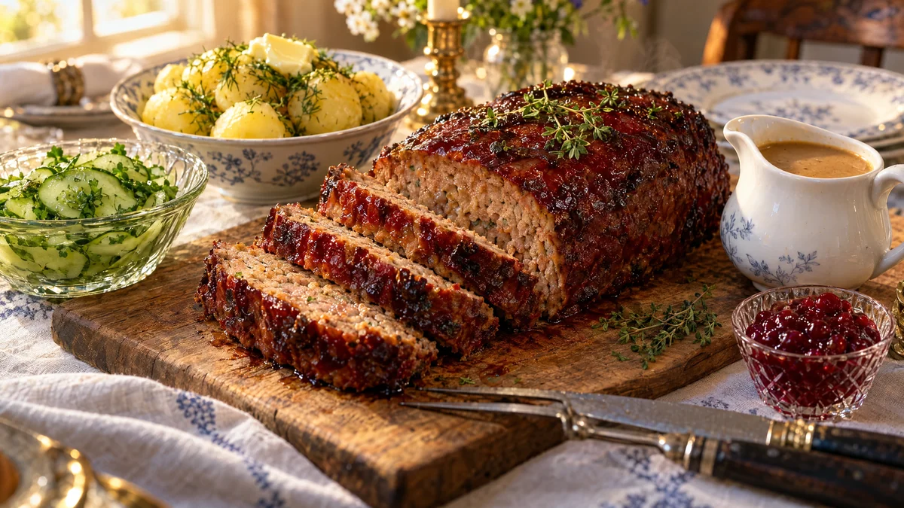

RESTFEST · RECEPTHuvudrätt
Glaserad köttfärslimpa med gräddsås och pressgurka
Ett paket köttfärs, en lök och lite ströbröd. Limpan bakas saftig i ugnen och glaseras med en blank, mörkröd glasyr av tomatpuré, sirap och senap, som karamelliseras i kanterna. Den skivas tjockt och serveras med gräddsås, potatis och pressgurka. Klassisk svensk söndagsmiddag, med en glasyr som får den att glänsa på bordet.
- Förberedelse
- 20 min
- Tillagning
- 50 min
- Portioner
- 4–6
- Nivå
- Nybörjare
 Det här behöver du
Det här behöver du
JÄMFÖRT MED DIN KYL
Tryck på + vid det du behöver köpa.
Köttfärslimpa
Glasyr
Gräddsås
Pressgurka
Till servering
Gör så här
- Sätt ugnen på 200 grader. Rör ihop ströbröd och mjölk i en bunke och låt svälla i 10 minuter. Det är det som gör limpan saftig.
- Hyvla gurkan tunt till pressgurkan. Rör ihop vatten, ättika, socker och salt, häll lagen över gurkan och strö över persiljan. Ställ kallt.
- Finhacka löken och fräs den mjuk i smöret i 4–5 minuter. Låt den svalna lite.
- Blanda färs, lök, ägg, salt, peppar, timjan och soja med ströbrödsblandningen. Arbeta ihop med händerna bara tills allt är jämnt blandat. Fukta händerna om smeten kladdar.
- Forma en avlång limpa, ca 8 × 20 cm, och lägg den i en ugnsform.
- Rör ihop glasyren och pensla hälften över limpan. Baka i mitten av ugnen i 20 minuter. Pensla på resten av glasyren och baka 20–25 minuter till, tills limpan håller 72 grader i mitten och glasyren har karamelliserats i kanterna. Saknar du termometer, stick in en kniv i mitten. Köttsaften ska vara klar, inte rosa.
- Lyft över limpan till ett skärbräde och låt den vila under folie i 10 minuter.
- Häll skyn från formen i en kastrull och tillsätt vatten, buljongtärning och grädde. Rör ut mjölet i lite kallt vatten och vispa ner det. Låt sjuda i 3–4 minuter, tills såsen har tjocknat. Smaka av med soja, gelé, salt och peppar.
Dekoration och servering
- Skär limpan i tjocka skivor på brädet, så att den blanka, mörkröda glasyren syns överst på varje skiva.
- Servera direkt från brädet, med gräddsåsen i en kanna bredvid.
- Lägg pressgurkan i en liten glasskål. Den gröna färgen och syran lyfter hela tallriken.
- Kalla skivor dagen efter är perfekta på smörgås med pressgurka.
Mått och ugnstemperaturer
Måtten är svenska (dl, msk, tsk, krm). Ugnstemperaturerna gäller vanlig ugn med över- och undervärme; med varmluft, sänk med 20 grader.